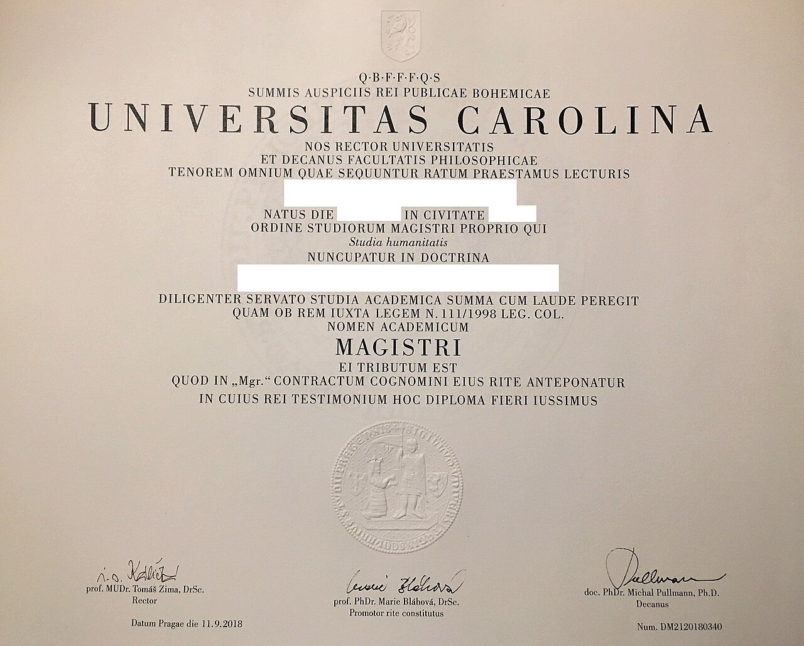

Scholarship Documents Checklist: Transcripts, SOP, Recommendation Letters, Passport
Last updated: October 2026. Document lists vary by programme. Always check the programme's own list — this page covers what nearly every programme asks for.

Most scholarship applications fail on documents, not on merit. A missing transcript page, a referee who never replies, a passport that expires too soon — each of these ends an otherwise strong application. The fix is unglamorous: prepare one complete set of documents once, keep it organised, and reuse it across programmes. Start six to nine months before your earliest deadline, because transcripts, attestations, letters and test scores are the items that run late.
The master checklist
| Document | What it must show | Common mistake |
|---|---|---|
| Transcripts (all degrees) | Every semester and subject, with the university's stamp or seal where asked | Submitting a summary or omitting weak semesters — selectors notice, and it damages trust |
| Degree certificates | The awarded degree, matching the transcript | Waiting for a convocation that a provisional certificate could have covered — check what the programme accepts |
| Statement of purpose / essays | Your story, your fit, your plan — in your own words | Copying a sample; see our SOP guide |
| Recommendation letters (usually 2–3) | Specific evidence about your work, from people who know it | Asking late, or asking someone famous who barely knows you |
| Passport | Valid well beyond your planned stay | Leaving renewal to the final month |
| CV / résumé | Education, experience, skills, publications — two pages is plenty | Ten pages, or a photo the programme did not ask for |
| English and test scores | Official reports sent to the right codes | Uploading a screenshot instead of the official report |
| Research proposal | Required for PhD and some research routes | Writing a topic, not a proposal — question, method, and why it matters |
| Photo and national ID | As specified by the programme (Türkiye Bursları asks for both) | An old, low-quality photo |
Transcripts and attestation
Order official transcripts from every institution you attended, and check that every page is present and legible before you scan them. Some programmes ask for Higher Education Commission attestation for Pakistani degrees; check each programme's document list rather than assuming it is or is not needed. If any document is not in English, arrange a certified translation early — translators are slow in application season. Scan in clear, complete PDF pages: a cropped or blurry page is treated as a missing page.
Recommendation letters: ask properly
Choose referees who know your work — a teacher who taught you, a supervisor who managed you — not the most senior person you can name. Give each referee your CV, the programme name, the deadline, and a short note on what you would like them to cover, then give them at least a month. Many programmes contact referees directly through the portal, so warn your referees to expect an email and to check their spam folder. A referee who misses the portal deadline can sink an application you otherwise completed on time.
Passport, CV and test scores
Renew your passport early if it expires within a year; many universities and embassies want validity extending well beyond your planned stay. Keep your CV to two pages, focused on education, relevant experience, skills and any publications — unless the programme asks for a photo, leave photos off. For test scores, send official reports through the testing body to the codes the programme publishes (for example, Fulbright Pakistan uses USEFP's code and the IIE code). A screenshot of your score is not a substitute for an official report.
Money documents: usually not at application stage
Fully funded scholarship applications usually do not ask for bank statements. A visa application later may ask for financial evidence depending on the country, but that is a separate stage with its own rules. If anyone asks you for money documents or payment to "secure" a scholarship, stop: every programme on this site is free to apply to, and no payment improves your chances.
How to organise it all
Keep one folder per programme, named clearly, with subfolders for transcripts, letters, scores and drafts. Name files so a stranger could understand them (for example, "transcript-bachelors.pdf", not "scan001.pdf"). Keep originals safe and work from copies. And before every submission, open each uploaded file and check it is the right document, complete, and readable — the most embarrassing rejections come from uploading the wrong file.